The song library
Songs
30 passages so far, from Genesis to Hebrews, listed in Bible order.
Tap a picture to play it here, or open it on YouTube. New songs are added as each one is finished; the newest are always on our YouTube channel. Songs are also gathered into playlists.
Each picture is labelled with the passage its words come from. Scripture words on this site and in the song pictures are from the King James Version (KJV), which is in the public domain in the United States. In the United Kingdom, rights in the KJV are vested in the Crown.
Genesis

Genesis 1:26 (KJV)
Psalms

Psalm 23:1 (KJV)

Psalm 91:4 (KJV)
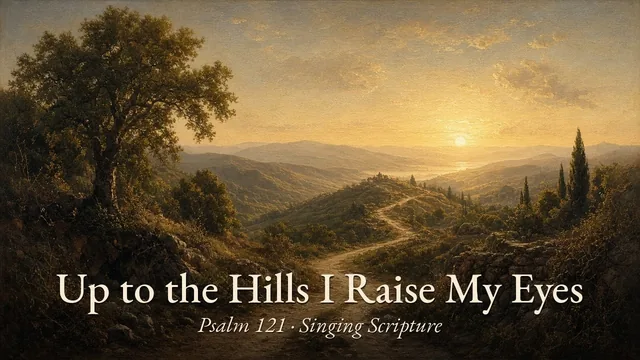
Adapted from Psalm 121:1 (KJV)

Adapted from Psalm 139:1 (KJV)
Isaiah

Isaiah 7:14 (KJV)
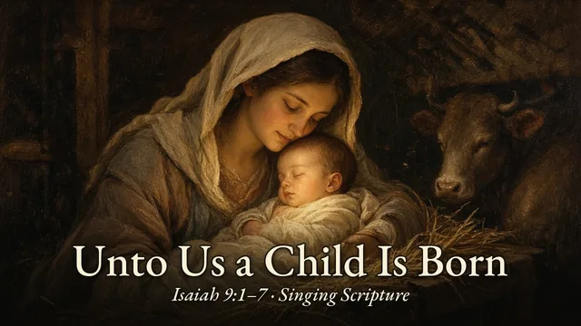
Isaiah 9:6 (KJV)
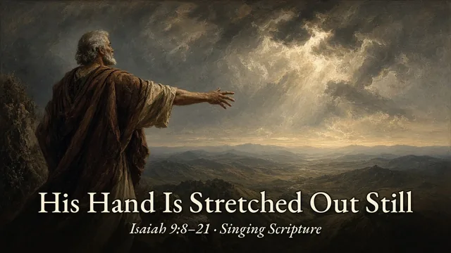
Isaiah 9:12 (KJV)
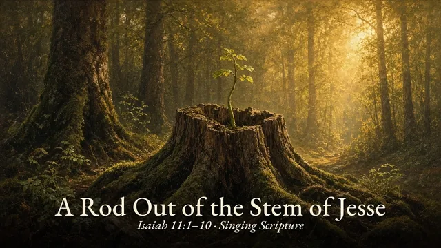
Isaiah 11:1 (KJV)
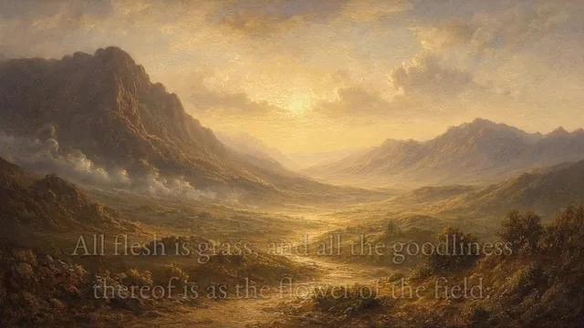
Isaiah 40:6 (KJV)

Adapted from Isaiah 53:3 (KJV)
Micah

Adapted from Micah 5:2 (KJV)
Matthew


Adapted from Matthew 2:6 (KJV)
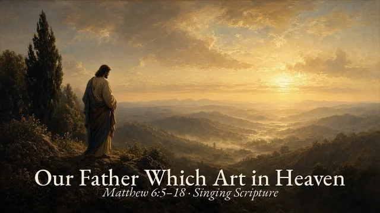
Matthew 6:9 (KJV)
Luke

Luke 1:28 (KJV)
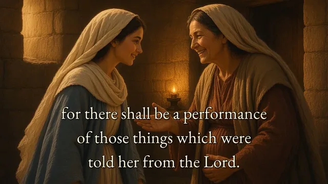
Luke 1:45 (KJV)

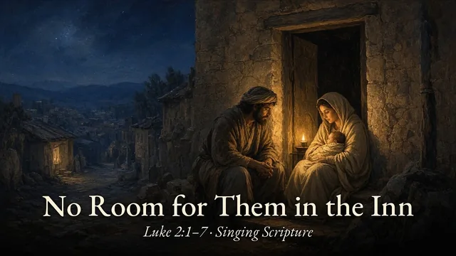
Luke 2:7 (KJV)

Adapted from Luke 2:8 (KJV)
John
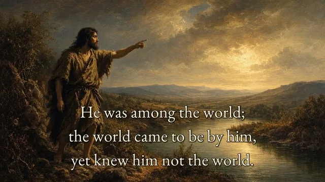
Adapted from John 1:10 (KJV)

John 3:16 (KJV)
Romans

Adapted from Romans 8:12 (KJV)
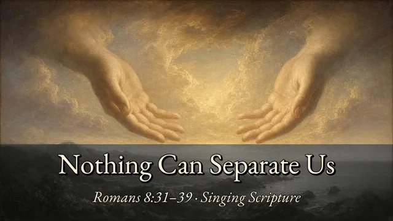
Adapted from Romans 8:35–39 (KJV)
1 Corinthians
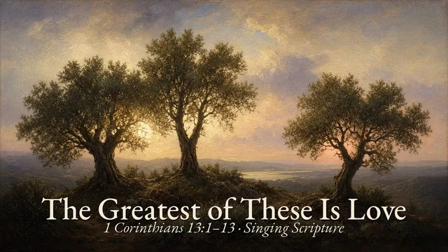
Adapted from 1 Corinthians 13:13 (KJV)
Galatians

Galatians 4:5 (KJV)
Philippians

Adapted from Philippians 2:9 (KJV)
Hebrews

Adapted from Hebrews 1:2 (KJV)